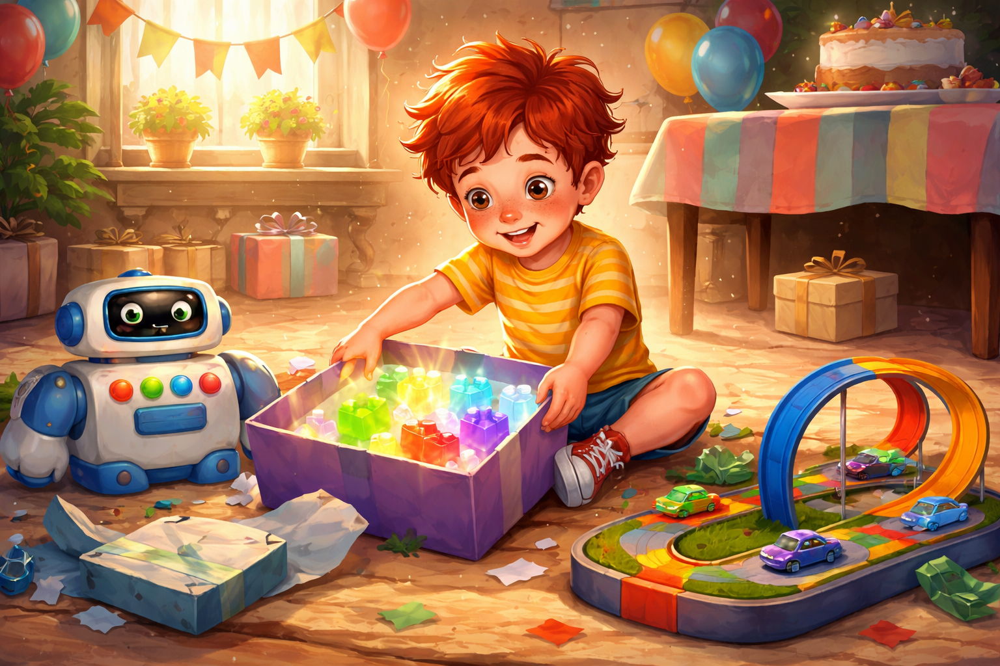
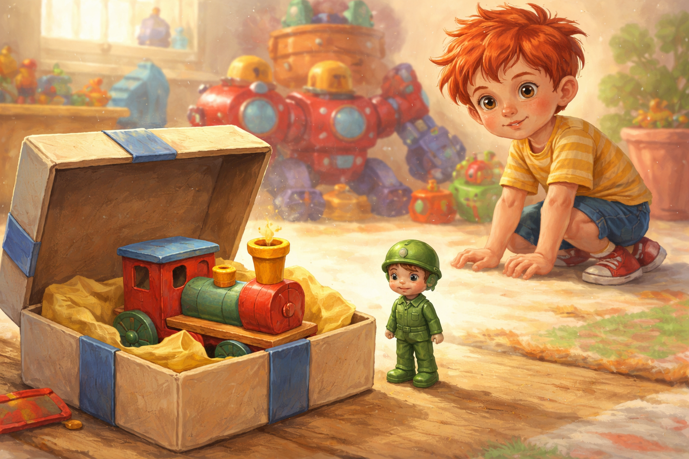
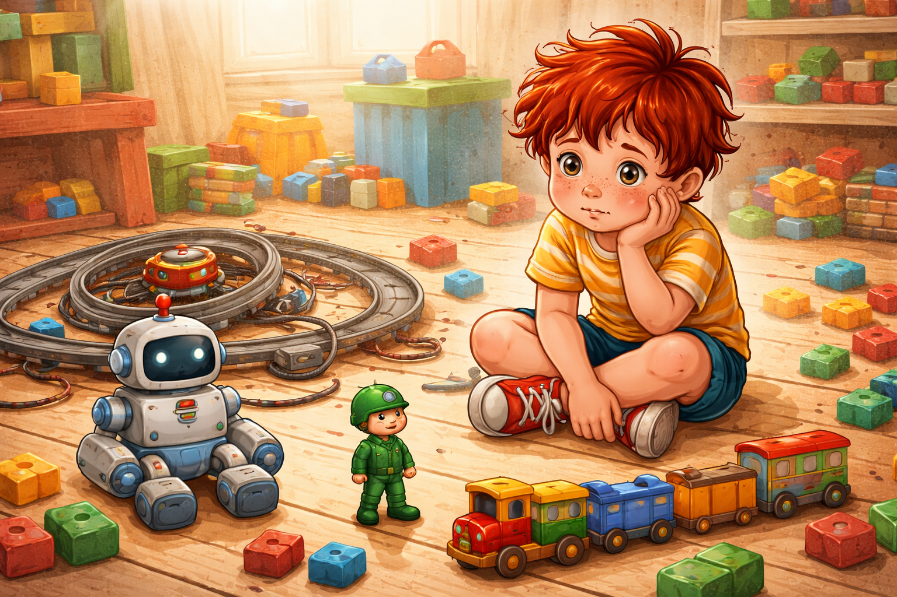
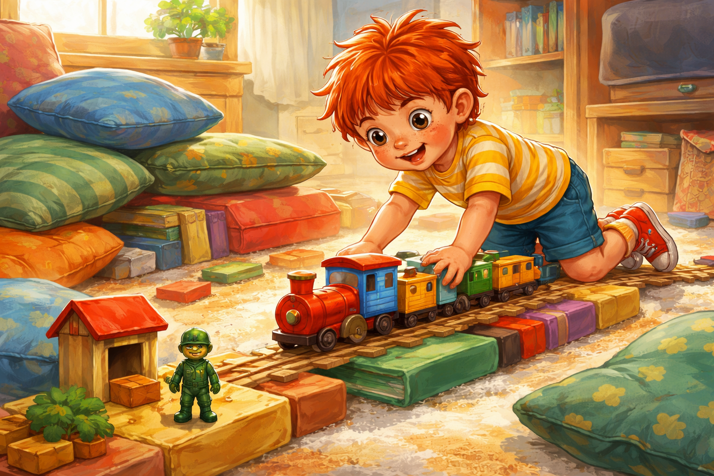
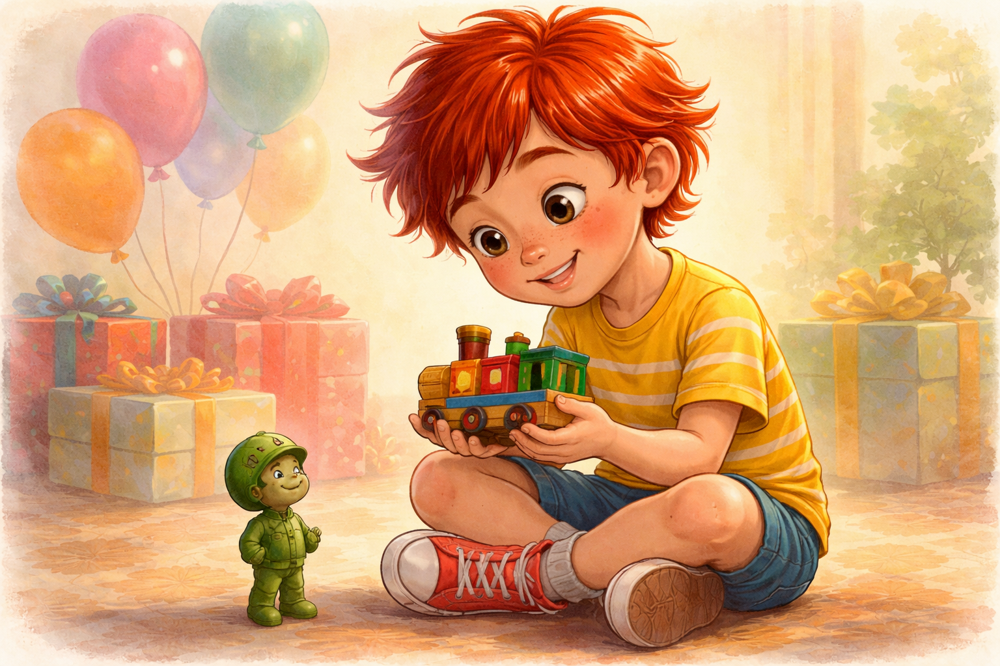
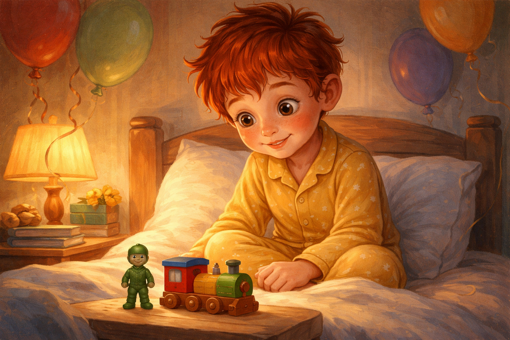

Палавко и рожденият ден
На рождения ден на Палавко къщата беше изпълнена с празничност. Балони се вееха във въздуха, гирлянди блестяха по стените, а масата беше отрупана с лакомства и подаръци.
Палавко тичаше от стая в стая и не можеше да скрие усмивката си. Той беше готов да отвори всичко, да види изненадите и да започне празника.

🎁 Скъпите подаръци
Палавко започна с най-големите и лъскави опаковки. Изпълни се с щастие, когато отвори първото: огромен конструктор, който светеше и издаваше космически звуци. После следващото: масивен робот с много бутони и най-различни функции - пееше, танцуваше, стреляше. Третото – тропическа писта, която изстрелваше коли и те минаваха бързо през спирали от мостове.
– Лелееее! – възкликна той. – Толкова са яки! Трябва да пробвам всичко веднага!

Малко по-назад, под масата, стоеше малка кутия с по-скромна опаковка. В нея беше малко дървено влакче, изрисувано с весели цветове. Подаръкът беше от Рико, неговия пластмасов войник и най-верен приятел.
Палавко погледна кутията с безразличие и я остави настрани.
– Хмм… това не е толкова готино – каза той. – Искам да играя с големите неща.
Рико леко се намръщи, но не каза нищо.

🎉 Неочаквана промяна
След час игра с роботите, конструкторите и пистите, Палавко започна да усеща нещо странно. Всички скъпи играчки като че изведнъж започнаха да се развалят: едно колело на пистата се счупи, на робота му се изхаби батерия, конструкторът се разпадна на малки части, които трудно се събираха обратно.
Палавко се спря и погледна разпилените подаръци. Не бяха забавни вече, бяха просто сложни и трудни за използване.

Тогава забеляза дървеното влакче. То беше малко, просто, но издържливо. Палавко го взе в ръце и го тества. Влакчето се движеше гладко по пода, караше се през всяка писта, която си измисли и можеше да се включи във всяка игра, без да се счупи.
– Хей! Това е забавно! – възкликна той. – Мога да направя за влакчето писта, гара, град… всичко!
Рико се усмихна доволно.
– Виждаш ли? – каза той. – Понякога най-ценните неща не са най-скъпите.
Палавко кимна. Влакчето беше неочаквано интересно и забавно.

🎈 Раздразнение и извинение
Рико първоначално се беше засегнал, че Палавко не забеляза подаръка му, но сега видя радостта в неговите очи
– Мисля, че сгреших, че се обидих – каза той. – Важното е, че влакчето ти харесва.
Палавко се засмя:
– И аз съм сигурен, че няма да се счупи веднага! Благодаря, Рико!

🎯 Поуката
Да получиш скъпи подаръци е забавно, но най-важното е да оценяваш това, което наистина ти носи радост. Понякога най-скромните подаръци могат да бъдат най-ценни и да дадат най-много забавление.
